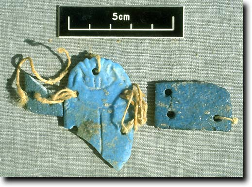
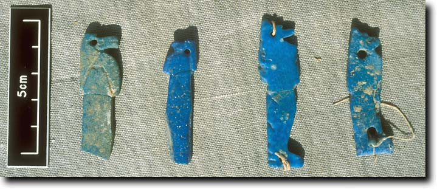
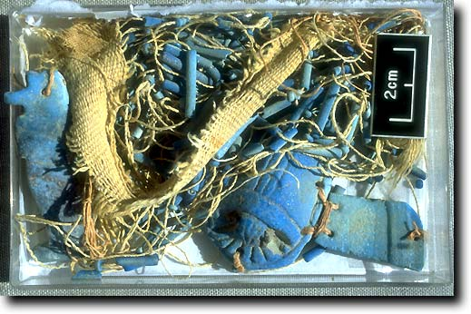
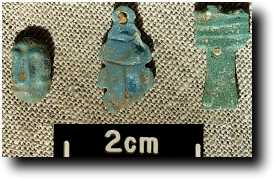
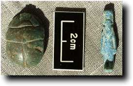

- Home
- Finds home
- Finds by date
- Finds by type
- Conservation
- Slideshow
- Site general
Amulets
|
Amulets of different types are known from many periods of Egyptian history. They were very frequently placed in strategic places in the wrappings of the mummy, and fall into a variety of types with different uses. A large scarab is often placed over the heart, sometimes with an inscription on it, and thus known as a 'heart scarab'. Others represent protective deities, and very many are what we called 'figured amulets' which represent either a religious concept or symbolise an object which has a magical significance for the deceased. These objects are small and easily carried, and hence very popular with tomb robbers. Thus they tend to be rather infrequent among disturbed burials like the ones in TT99. Nonetheless, we have found a few. Winged scarabs and figures of the sons of Horus |
 A winged scarab |
 Some sons of Horus amulets |
 A winged scarab, son of Horus amulet, and part of a bead net still attached to some mummy bandage |
|
Both these types of object become popular in these forms at the end of the Third Intermediate Period, from about 700 BC onwards. The four sons of Horus have long been among the major protective deities for the deceased, and the winged scarab is doubtless associated in concept with the heart scarab mentioned earlier. In the above forms, they are usually sewn onto the outer mummy bandages (hence the holes) or are incorporated into a net of beads which was placed over the wrapped mummy. They are usually made of faience, and nor desperately well made, probably indicative of the mass production industry active at the time. Other amulets |
|

|

|
| Cobra, scarab, and Djed amulets |
Steatite scarab and possible Nephthys amulet |
|
These small amulets were placed within the mummy wrappings, sometimes being sewn to them, and they all have a symbolic purpose. The green Djed amulet is a symbol of Osiris, and also represents stability. The uninscribed steatite scarab is a continuation of the older practice of the inscribed heart scarab. Another figured amulet found in TT99 was a small black headrest, which again symbolises the support of the head of the deceased. Two small figures of deities were also found. |
|
© Nigel Strudwick 1997-2016